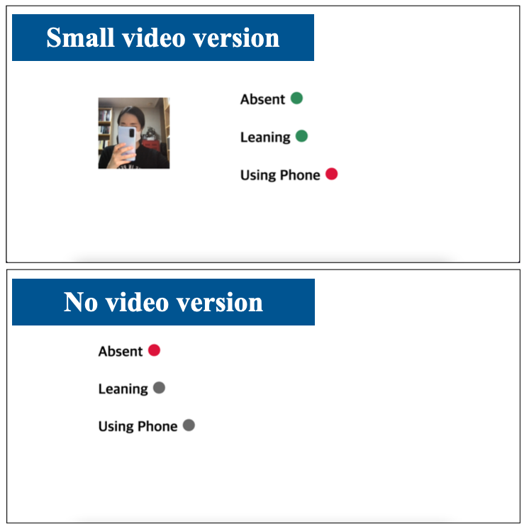
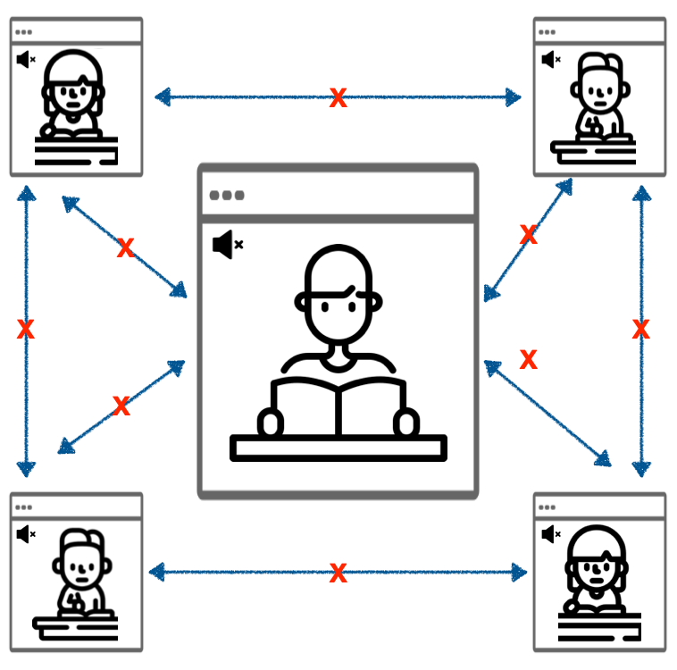
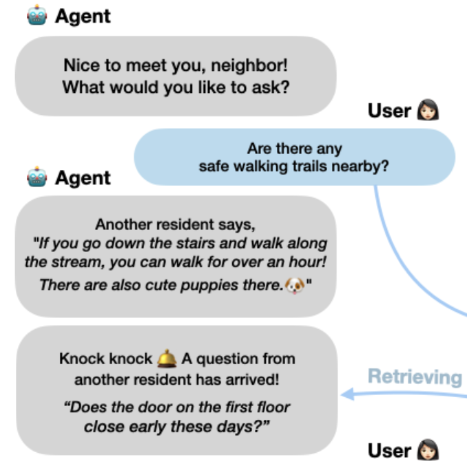
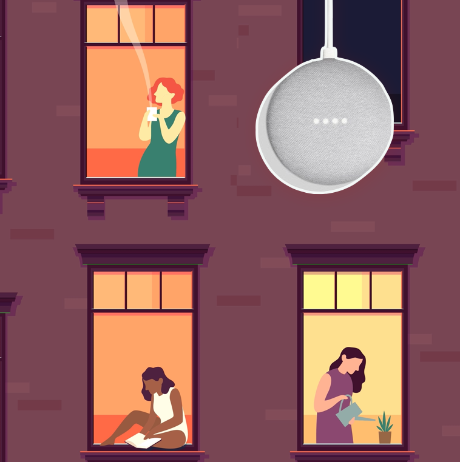
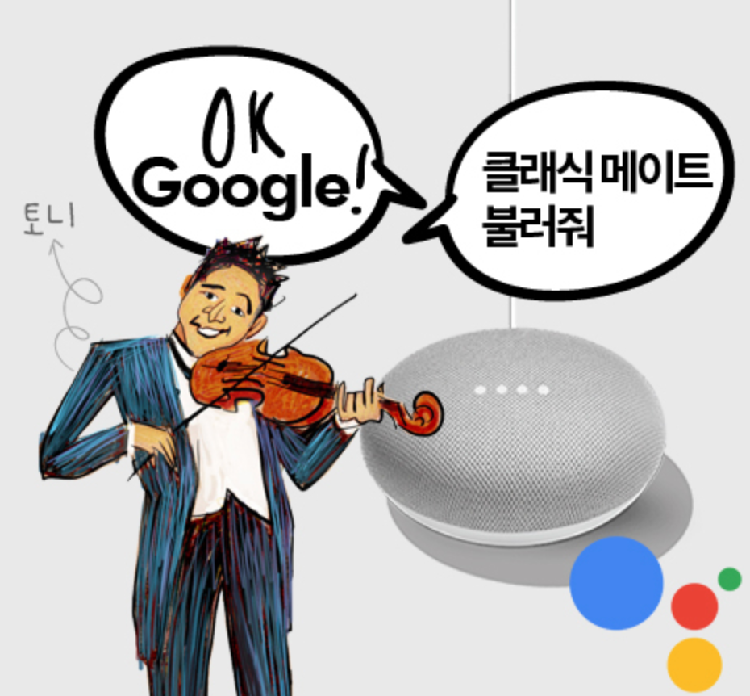
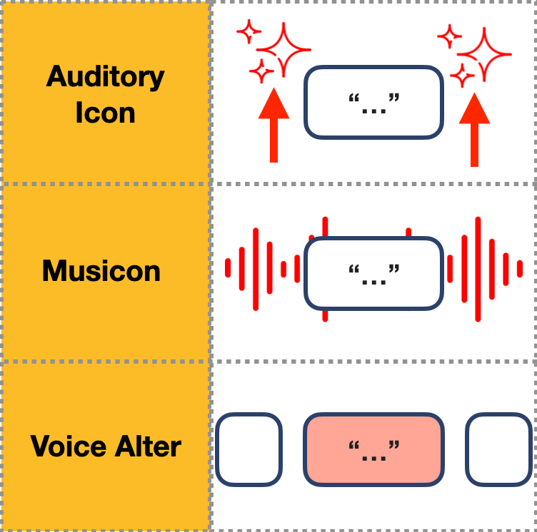

|
Soobin Cho Hello! I'm a first year PhD student in the Department of Human Centered Design and Engineering at the University of Washington, where I am advised by Prof. David McDonald and Prof. Mark Zachry. I am interested in Human Computer Interaction (HCI), Computer Supported Cooperative Work (CSCW), Computer-Mediated Communication (CMC), and Social Computing. I am fascinated by the dynamics of user interactions through various computational mediums. My research has spanned conversational agents, online communities, and video conferencing tools. Mail: soobin30[at]uw[dot]edu CV / LinkedIn / Google Scholar |
{kind=link}
Research |
|
Utilizing Generative AI for Dispute Resolution between Wikipedians (ongoing) Lead Researcher, University of Washington |
|
|  |
Designing a New Video Conferencing Interface for Virtual Studying Lead Researcher, UX Lab Soobin Cho, Bongwon Suh, and Joongseek Lee. 2022. “Hide Your Video, Show Your Action!” Investigating a New Video Conferencing Interface for Virtual Studying. CSCW ’22 [pdf] |
|  |
Understanding Co-Studying Activity on Video Conferencing Rooms Lead Researcher, UX Lab Soobin Cho, Joongseek Lee, and Bongwon Suh. 2023. “I Want to Reveal, but I Also Want to Hide” Understanding Virtual Study Room and Its Inherent Conflict of Revealing and Hiding Needs. CSCW ’23 [pdf] |
|  |
Designing a Knowledge-Sharing Chatbot for Residents of a Co-Living Space Lead Researcher, UX Lab Sang Ah Park, Yoon Young Lee, Soobin Cho, Minjoon Kim, and Joongseek Lee. 2021. “Knock Knock, Here Is an Answer from Next Door”: Designing a Knowledge Sharing Chatbot to Connect Residents: Community Chatbot Design Case Study. CSCW ’21 [pdf] Sang Ah Park, Soobin Cho, Yoon Young Lee, and Joongseek Lee. 2021. ‘Naver Knowledge-iN’ in a Speaker: Designing a Voice-Based Knowledge Sharing Service. HCI Korea 2021 [pdf] |
|  |
Understanding Single Households’ Use of Smart Speakers Lead Researcher, UX Lab Soobin Cho, Yoon Young Lee, Sang Ah Park, and Joongseek Lee. 2021. “Can Smart Speaker Be the ‘SimSimi’ for Single Households?”: Study on the Use of Smart Speakers by Single Households. HCI Korea 2021 [pdf] |
 |
Investigating Information Needed for Awareness between Remote Workers Lead Researcher, UX Lab Soobin Cho, Bongwon Suh, and Joongseek Lee. 2020. Not Too Much, Nor Too Less: Investigating Which Information Should Be Shared for Awareness Between Remote Workers. CSCW '20 [pdf] |
|  |
Building a Smart Speaker Application for Classical Music Beginners Graduate Research Assistant, UX Lab Media Coverage: Seoul Economic Daily, Aju News, E Daily, MBN News, New Daily, Sports Seoul, Nate News, Seoul Culture Today |
|  |
Investigating Auditory Cues for Separateness of AI Speaker Services Lead Researcher, UX Lab Soobin Cho and Joongseek Lee. 2020. Study on Auditory Cues for Conversation Separateness in AI Speaker Multi-Turn Services. HCI Korea 2020 [pdf] |
Experience |
|
UX Researcher, Product Team | Soft Berry Inc. Seoul, South Korea | Mar 2022 - Aug 2023 |
|
|
Graduate Research Assistant | UX Lab, Seoul National University Seoul, South Korea | Sep 2019 - Feb 2022 |
|
|
Junior Associate, Consumer Marketing Team | Weber Shandwick Korea Seoul, South Korea | Sep 2017 - Oct 2018 |
|
Last updated in 10/2023 |